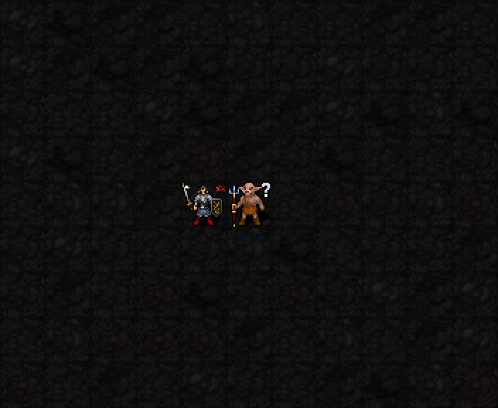

신앙50 / 최소 기도술 없음 / 추가MP·신앙·행동 비용 없음. 경험치를 주는 지정 상대를 직접 인접 근접 처치하면, 해당 공격 완료 후30aut(보통3턴) 동안 잔심을 획득합니다. 다음 새로운 경험치 대상 적을 인접 근접 공격하면 첫 타부터 명중3+floor(기도술/6), 살육2+floor(기도술/9)를 적용합니다.
기도술12에서 명중+5·살육+3. 추가EV나5성 강화 보너스는 없음. 첫 공격 시도에 소모되며 빗나가도 소모합니다. 행동 취소·무턴 행동·원거리·주문·리치·경험치 없는 대상에는 소모하지 않습니다. 만료·층 이동 시 제거. 중첩 없이 새 보상은 시간을 갱신합니다.
새 적에게 쌍섬을 쓰면 첫 타는 잔심으로1성 명중·살육 보너스, 두 번째는 첫 타 후 지정된 결투 상대의 기존1성 보너스를 받습니다. 첫 타 적중 시 두 번째 명중+8이라는 기존 규칙도 유지합니다. 잔심은 한 번만 소모됩니다. 5성 결투장 처치의MP 회복·쌍섬 제한 해제와 함께 발동합니다.

기존 상대를 실제 일반 근접 공격으로 처치하고, 잔심이 남은 상태에서 다음 오크에게 실제 근접 공격을 실행했습니다. 위치·장비·적HP를 통제한SDL 검사장이며 일반 던전 플레이 영상은 아닙니다. 이번 변경은 전투 처리이며 새 전용 이펙트는 추가하지 않았습니다.
실제 첫 근접 지정·지정 상대 처치·공격 완료 후3턴 보장·다음 상대 첫 근접 소모·쌍섬·5성 처치 호환, 기도술0/12/27의명중·살육, 빗나감 소모·취소/무턴 보존·리치/주문/원거리/경험치 없음/만료/층 이동 제외, 새 프로세스 저장복원 후 동일한 실제 근접2회·피해·상태·난수 일치,22신 회귀와 기존 저장복원 검사 통과.